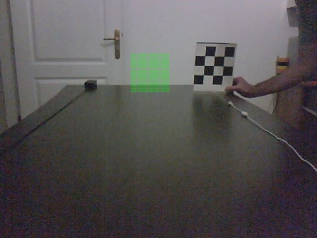
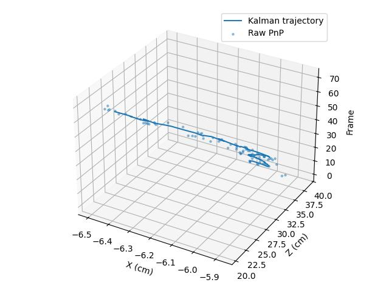
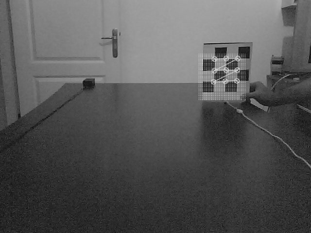
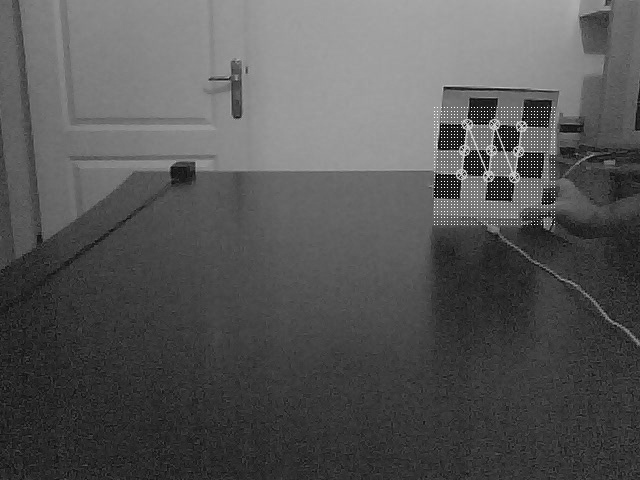

Video görüntülerinde obje takibi için filtreleme kullanmak mümkün, bu teknik ile iki boyutlu yansımadan üç boyutlu konum bilgisini takip edebiliriz. Kalman Filtreleri (KF) ile görüntüde ilgilendiğimiz objeyi her seferinde iki boyutta “bulmalıyız’’, yani bu objenin örüntüsünün ne olduğunu önceden biliyor olmamız gerekir, ve onu sonraki resimlerde takip etmemiz gerekir. Bulduğumuz, iki boyutlu kordinat değerleridir, yani ölçümsel büyüklüklerdir, ardından KF’in en son konumuna göre ürettiği tahmin ile aradaki fark KF’i düzeltmek için kullanılır.
Ölçümsel dönüşümü temsil eden H’e ben onun temeli olan yansıtma (projection) kelimesinden gelen P matrisinden bahsedelim. Yansıma matrisi görüntü (vision) literatüründe iğne delik kamerası (pinhole camera) modelinden ileri gelen bir matristir ve bu matrisi hesaplamak ayarlama / kalibrasyon (calibration) denen apayrı bir işlemin parçasıdır. OpenCV içinde kalibrasyon için fonksiyonlar var, biz de bunları denedik, kalibrasyon için kullandığımız resimlerle alakalı olmalı, elde edilen sonuçlardan memnun kalmadık. Alternatif olarak şunu yaptık; resimde görülen yeşil yüzey bizim programın oluşturduğu hayali bir yüzey. Filtrenin o anki tahminini P üzerinden görüntüye yansıtarak bu yüzeyi oluşturduk, böylece deneme / yanılma yöntemiyle pek çok P değerini deneyerek, yüzeyin resimde görülen masanın sonunda çıkacak şekilde olmasını sağladık. Yansıtma için kullanılan \(K\) matrisi, yansıtma metotu ve başlangıç imajı altta:

Amacımız düz bir yüzey üzerinde hareket eden, üzerinde 4×4 karelik bir satranç tahtası deseni bulunan bir kartonun, video görüntülerinden üç boyutlu hareketinin nasıl takip edilebileceğini sistematık ve formel bir çerçevede açıklamak. Geometrik olarak doğru ve istatistiksel olarak tutarlı bir yöntem kullanmak istiyoruz.
Ele alınan yöntem iki ana bileşenden oluşur:
Görsel poz kestirimi (pose estimation) — her karede nesnenin 3D konumu
Durum uzayı modeli + Kalman Filtresi — bu konumların zaman içinde düzgünleştirilmesi.
Fiziksel senaryo
Temel varsayımlar
Bu varsayımlar, problemi hem iyi tanımlı hem de çözülebilir hale getirir.
Geometri ve Dinamiğin Ayrılması
Bu yaklaşımda kritik tasarım kararı şudur: Görüntü geometrisi ile zaman dinamiğini birbirinden ayırmak
Bu ayrım sayesinde:
Bu mimari, hem matematiksel olarak tutarlı hem de pratikte kararlı bir çözüm sunar.
Satranç Tahtası ve İç Köşeler (Önemli Detay)
4×4 karelik bir satranç tahtası:
OpenCV’nin findChessboardCorners fonksiyonu kareleri
değil, iç köşeleri bekler.
Bu yüzden kullanılan boyut:
board_size = (3, 3)Bu detay gözden kaçarsa: - Hiç köşe bulunmaz - Takip tamamen sessizce başarısız olur
Poz Kestirimi (Pose Estimation) – solvePnP
Temel ilke
Elimizde şunlar var:
KBu bilgilerle aşağıdaki geometrik problem çözülür:
“Bilinen 3D noktaların, görüntü düzlemindeki 2D izdüşümlerinden, nesnenin kamera koordinat sistemindeki konum ve yöneliminin kestirilmesi”
Sayısal çözüm (OpenCV)
ok, rvec, tvec = cv2.solvePnP(object_points,
image_points,
K,
distCoeffs)Çözüm sonucunda elde edilen büyüklükler:
rvec: Nesnenin yönelimini temsil eden dönme vektörü
(Rodrigues gösterimi)tvec: Nesnenin kamera koordinat sistemindeki öteleme
vektörütvec = [X, Y, Z] doğrudan metrik 3D konumdur.
Bu aşamadan sonra:
gerek yoktur.
Neden X–Z Düzlemi Takip Edildi?
Fiziksel senaryoda:
Bu yüzden Kalman filtresinin durumu şöyle tanımlandı:
x_t = [X, Z, dX, dZ]Bu, problemi:
hale getirir.
Kalman Filtresi Modeli
Durum geçiş modeli (sabit hız)
\[ X_{t+1} = X_t + dX_t · \Delta t \]
\[ Z_{t+1} = Z_t + dZ_t · \Delta t \]
Matris formunda:
F = [[1, 0, dt, 0],
[0, 1, 0, dt],
[0, 0, 1, 0],
[0, 0, 0, 1]]Ölçüm modeli
Ölçüm, doğrudan PnP’den gelen konumdur:
z_t = [X, Z]Bu nedenle ölçüm matrisi basittir:
H = [[1, 0, 0, 0],
[0, 1, 0, 0]]Model tamamen doğrusal olduğu için klasik Kalman filtresi yeterlidir.
Kodu track-chess-kf.py içinde bulabiliriz.
Notasyon ve Semboller
| Sembol | Açıklama |
|---|---|
| (X, Y, Z) | Nesnenin kamera koordinat sistemindeki 3D konumu (metrik birimler) |
| (X, Z) | Bu çalışmada takip edilen yatay (X) ve derinlik (Z) bileşenleri |
| (dX, dZ) | İlgili eksenlerde hız bileşenleri |
| (x_t) | Kalman filtresinin (t) anındaki durum vektörü ([X, Z, dX, dZ]^T) |
| (z_t) | Ölçüm vektörü (PnP’den elde edilen ([X, Z]^T)) |
| (rvec) | Nesnenin yönelimini temsil eden Rodrigues dönme vektörü |
| (tvec) | Nesnenin kamera koordinat sistemindeki öteleme vektörü ([X, Y, Z]^T) |
| (K) | Kamera iç parametrelerini içeren kamera matrisi |
| (F) | Durum geçiş matrisi (sabit hız modeli) |
| (H) | Ölçüm matrisi |
| (Q) | Süreç gürültüsü kovaryans matrisi |
| (R) | Ölçüm gürültüsü kovaryans matrisi |
import pandas as pd
df = pd.read_csv("trajectory.csv")
print(df.head())
import matplotlib.pyplot as plt
from mpl_toolkits.mplot3d import Axes3D # noqa
fig = plt.figure()
ax = fig.add_subplot(111, projection='3d')
ax.plot(df["kf_X"], df["kf_Z"], df["frame"],
label="Kalman trajectory")
ax.scatter(df["raw_X"], df["raw_Z"], df["frame"],
s=5, alpha=0.4, label="Raw PnP")
ax.set_xlabel("X (cm)")
ax.set_ylabel("Z (cm)")
ax.set_zlabel("Frame")
ax.legend()
plt.tight_layout()
plt.savefig('vision_60track_02.jpg')
Başlangıç Salınımı (Zig-Zag) Neden Normal?
Elde edilen sonuçlarda başta küçük bir zig-zag görülmesi doğaldır:
Bu, Kalman filtrelerinde beklenen ve sağlıklı bir davranıştır.
İstenirse: - İlk iki ölçümden hız tahmin edilerek - ya da RTS smoother uygulanarak
tamamen giderilebilir.
Sonuç ve Değerlendirme
Bu yaklaşım ile:
Özet olarak, kullanılan modelleme yaklaşımı hem geometrik hem de istatistiksel açıdan tutarlıdır ve uygulamada güvenilir sonuçlar üretir.
Bu mimari, daha ileri çalışmalar (RTS smoothing, ivmeli hareket modelleri, faktör grafik tabanlı yaklaşımlar) için sağlam bir temel sunmaktadır.
Takip sirasinda daha onceki bazi kodlardan alinan ciktilar alttadir.


Parçacık filtreleri (PF) bir dağılımı ayrıksal olarak temsil edebilirler. Diyelim ki tek boyutlu bir dağılımı 100 öğe içeren bir dizin ile temsil edebiliriz, o zaman dağılımın değerlerini 100 tane noktada taşımamız gerekir. Bunun faydaları her türlü dağılım şeklini temsil edebilmemiz. Gaussian ile sadece tek bir tepe noktası olabilir, fakat ayrıksal temsil ile 2, 3, istediğimiz kadar tepe noktası olan bir dağılımı temsil edebiliriz. Bu sayede birden fazla gayrı lineer hipotezi aynı anda işletebiliriz. KF ile tepe noktası en iyi tahminimizdir (mesela.. satranç kartonu masa ortasında), PF ile birkaç tahmini aynı anda hesaplatmak mümkün olabilir.
PF kodlaması \(x_t\) için iki tane veri yapısı gerekir. Biri dağılım değerlerini temsil eden parçacıklardır, diğeri dağılımdaki önemini temsil eden ağırlıklardır. Filtreleme mekanığı KF’e benzer, önce bir geçiş uygulanır, ki bu geçiş kararsızlığı arttıracaktır, ardından gözlem verisi ve bir hata fonksiyonu üzerinden dağılım güncellenir. Bu işlem sırasında hatası yüksek olan parçacıklar cezalandırılır, onların ağırlığı azalır, ötekilerinki yükselir.
Bu uygulamada PF’in dışarıdan gelen gözlem verisine ihtiyacı var, veri muhakkak gürültülüdür, [3]’te görülen yüz takip örneğinde olduğu gibi, ve gözlem verisi görüntüde yeri saptanan satranç tahtası deseni piksel olacaktır, ki bu değerler bir yansımayı temsil ediyor, gizli bilgi objeşnin üç boyuttaki yeri var, bize gelenler onun iki boyuttaki yansıması. BU desenin iki boyutta belli köşe noktalarını alıyoruz.
Şimdi PF’e gereken olurluk hesabı için her parçacığın iki boyut yer hipotezine göre eldeki verinin ne kadar “mümkün” olduğu hesaplanır. Bu hesaplara göre iyi tahmin etmiş olan parçacıklar ödüllendirilir, diğerleri cezalandırılır.
Kodlar track-chess-pf.py içinde bulunabilir.
Kodlar
track-chess-kf.py, track-chess-pf.py
Kaynaklar
[1] Bayramlı, Örnek Video 1
[2] Bayramlı, Örnek Video 2
[3] Bayramli, Istatistik - Monte Carlo, Entegraller, Sıralı Monte Carlo